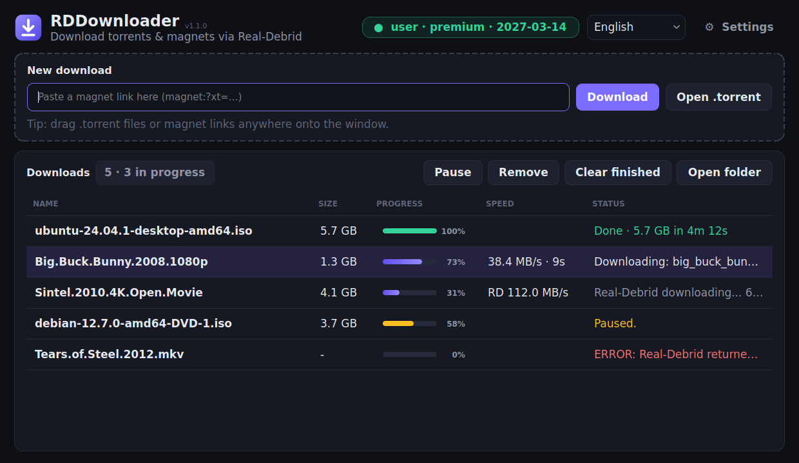

Paste a magnet link or drop a .torrent file and get the files on your PC, without opening a browser. It's free, open source and needs no install.
v1.1.0 · Windows 10/11 · Linux x86_64 · All releases

Paste a magnet link or drag and drop .torrent files anywhere onto the window.
Shows the current download speed, the time left and the progress of every download.
Downloads continue from the last byte received and retry on their own when the network drops.
Your API key stays on your PC. The app talks only to the official Real-Debrid API and has no telemetry.